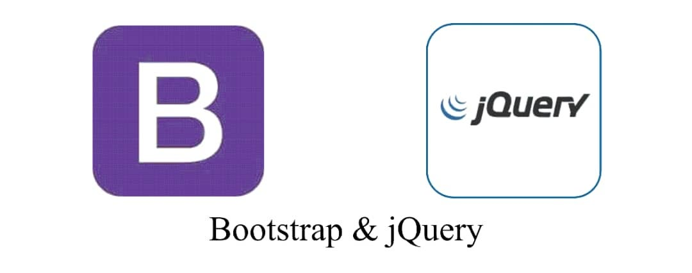
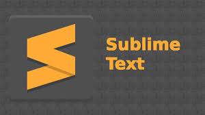

OLAOYE ADEMOLA
I am an applicant for the position of Senior Front End Developer at your esteemed organization. With a passion for crafting exceptional user experiences and a strong technical skill set, I am confident in my ability to contribute to your company and drive the successful implementation of cutting-edge web applications.
📞 Call me at 08026457498Background
Throughout my study at New Horizons ICT Resource Center, I have amassed extensive experience in front end development, specializing in creating intuitive and visually appealing user interfaces. With a solid foundation in HTML, CSS, and JavaScript, I have successfully delivered numerous projects that seamlessly blend aesthetics with functionality. My expertise extends to modern front end frameworks, enabling me to build scalable and responsive web applications that meet the highest industry standards. One of my key strengths lies in my ability to collaborate effectively with cross-functional teams, including designers, back end developers, and project managers. I excel at translating design concepts into pixel-perfect implementations, ensuring a seamless user experience across various devices and platforms. My strong communication skills and attention to detail allow me to thrive in a fast-paced, agile environment, where I can contribute to the success of projects from conception to deployment.
Skills
Additionally, I am well-versed in modern web development best practices, including performance optimization, accessibility, and search engine optimization (SEO) and different programming languages such as Javascript, HTML, bootstrap, CSS ,Sublime Text,GitHub,JQuery. I continuously stay up-to-date with the latest trends and advancements in the front end development landscape, ensuring that I can leverage the most relevant tools and techniques to deliver exceptional results.
Interests
After graduating from New Horizons Center and bagging a degree as an Advanced Senior Front-end Developer, i have resarched various companies who offer the best Job experiences and i stumbled upon your company and since then, i have wanted to work in your company as a Senior Front-end Developer Hence, that is why i am now applying to your organization.
Experiences
I have been working on the three main Front-end development tools; HTML,CSS and Javascript for over three(3) years and i have made so many projects, of which some of my best projects are enlisted in this portfolio.
My projects


CATEGORIES

Front-end

Design

Backend